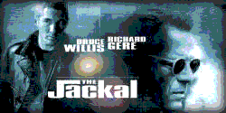
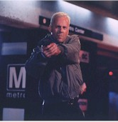
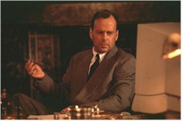
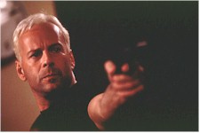

Contents | Features | Reviews | News | Archives | Store |
 |
|
| Movie Credits | Buy It! |
The Jackal
Review by Eddie Cockrell
Posted 14 November 1997
|  | Directed by Michael Caton-Jones Starring
Bruce Willis, Richard Gere, Screen Story and Screenplay by Chuck Pfarrer |
"That rocks!" says scruffy gearhead Lamont (Jack Black) to icy assassin Jackal (Bruce Willis) as the latter fiddles with an enormous computer-controlled Gatling gun that fells trees and blows softball-sized holes in automobiles and scruffy gearheads. It is this very blend of hipness and mayhem that The Jackal aims for and routinely hits, but while there's no denying the visual power of director Michael Caton-Jones' loud and shiny remake of Fred Zinnemann's subtle and steely 1973 British-French procedural The Day of the Jackal, the need for and value of such a thing – particularly in this absurdly illogical incarnation that has no interest in respecting the original – is decidedly questionable.
When the arrest of a prominent underworld figure in a Moscow discotheque goes awry, the dead hood's brother hires the legendary Jackal to avenge the death by taking out a prominent American official. As the assassin travels around Europe and North America in elaborate disguises making preparations for the event, he is tracked by FBI deputy director Carter Preston (Sidney Poitier) and Russian intelligence office Valentina Koslova (Diane Venora). They, in turn, enlist the aid of imprisoned IRA operative Declan Mulqueen (Richard Gere), one of only two people who can identify the Jackal by sight. Once aligned in this shaky axis the hunt is on, with the killer zeroing in on his still unknown prey while the authorities – and the audience – scramble to identify and second-guess his plans. The eventual sweaty showdown pits the Jackal one-on-one against Mulqueen, who has unfinished business with the psychotic assassin and his personal taunts.
For the second time in as many weeks, Hollywood presents an interesting example of market-dictated adaptation for those willing to do a little research (Universal has helpfully made Zinnemann's film – sadly, panned and scanned instead of letterboxed – available once again on tape). A close reading of the new credits yields a first, crucial clue: the "Screen Story and Screenplay" is by Chuck Pfarrer, who has specialized in hollow, cartoonish action scripts such as Barb Wire (1996), Hard Target (1993) and Darkman (1990). Tellingly, the title cards avoid Frederick Forsyth's original novel entirely, preferring to credit the Golden Globe-nominated "Motion Picture Screenplay" of Kenneth Ross, who followed his original adaptation with interesting work on Brother Sun, Sister Moon (1973) and the international caper films The Odessa File (1974), Black Sunday (1977) and The Fourth War (1990).
As you might imagine in these days of spiraling costs and overblown action, dramatic inflation has taken a sad toll on Zinnemann's modestly revered original: the Jackal's price has jumped from $500,000 to $70 million, the guns have grown almost laughably larger, the screwdriver Edward Fox uses to adjust the sight on his custom-built rifle has been replaced by a keypad and internet service provider (the film doesn't even have the wit to give Willis the occasional busy signal), and a spray-painted sports car has been replaced by a chameleon-like minivan. Even the inventive soundtrack by Carter Burwell (Conspiracy Theory, Raising Arizona) is thundering with contemporary offerings from Massive Attack, Primal Scream, Bush and more of that sort of thing – which sounds pretty cool now but may not have as much of a shelf life as Georges Delerue's score for the original.
Even more alarming, in retrospect, was Pfarrer's decision to eliminate both the legitimate motivation of the original and the identity of the target. A band of French military extremists (OAS) passionately committed to overthrowing the government of aloof leader Charles de Gaulle for granting independence to Algeria is one thing, but a Russian gangster's vendetta-fueled selection of a prominent American to be killed purely for retribution marks a crucial shift in the focus of the film. Without a plausible hook – political or emotional – the tension of the film, which is built on the same rough framework as the original, moves from the question of "How is the Jackal going to pull off this seemingly impossible hit?" to "What precisely is going on here and why should I care?" – a fatal flaw in a story built around an efficient enigma instead of a three-dimensional person.
Ironically, it is the character of Mulqueen that carries the emotional weight of the film and Richard Gere who emerges as the surprise focus of The Jackal for his crafty portrayal of a man actually committed to something. His first meeting with Preston and Koslova in the exercise yard of a prison is a modest triumph of expressive acting and crafty blocking, one of a few scenes in which director Caton-Jones exhibits an original approach to wide-screen composition and a firm adherence to Zinnemann's craftsmanlike approach to picture making (there's an excellent article on the director, who died this past March firmly opposed to the remake, in the September-October issue of "Film Comment"). So too the subplot of Mulqueen's supposed inability to "protect his women" has unexpected emotional resonance in a film that is elsewhere satisfied to have shady figures drink from heavy tumblers and characters say things like "A man like this doesn't make mistakes" and "What's her story then?".
Only Diane Venora as the steely operative Koslova makes a lasting impression among the supporting cast, using a withering stare, languid way with a cigarette and a Garbo-ish accent to elevate her character above cliche. As for Willis, he's competent if not particularly distinctive, admirably masking that annoying smirk but failing to give his Jackal the charisma and/or panache of Fox's laconic, almost rakish original. Whereas an unknown could've brought genuine, unexpected menace to the part, Willis is, well, never not Bruce Willis. He probably got the movie funded, but the baggage of his persona certainly impedes any momentum the story builds.
Technically, the film is a marvel of sharp edges and diverse locations, with the Panavision cinematography of Karl Walter Lindenlaub (Gere's other new movie Red Corner, Independence Day, Caton-Jones' previous film Rob Roy) underscoring the baker's dozen main locations and the production design of Michael White (The Rock, Crimson Tide) providing a neat twist on the climactic set piece inspired by Washington's Metro Center subway station that posits a more pedestrian-friendly and dramatically lit space than the one that was actually built.
In the end, The Jackal is a cynical, heavy-handed imitation of a unique thriller that is technically impressive but makes the all-too-common mistake of assuming that bigger is better. While it may in fact rock, it does so to no discernible purpose and won't for very long in the fickle pre-holiday marketplace.
Contents | Features | Reviews | News | Archives | Store
Copyright © 1999 by Nitrate Productions, Inc. All Rights Reserved.